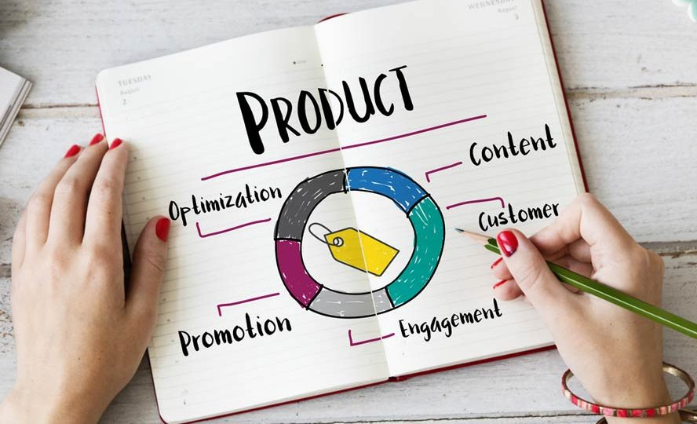

SERVICES

Website
Full-Stack Development
Full Stack Development memiliki kemampuan yang beragam dalam bahasa pemrograman dan dapat membuat, mengembangkan dan memecahkan permasalahan dalam berbagai proyek perusahaan, baik untuk karyawan internal maupun klien.
Website Android Engineering
Android Engineering yang bertanggung jawab untuk mengembangkan, merancang dan membangun perangkat lunak yang canggih berbasis mobile menggunakan sistem operasi Android.

Website Product Management
Product Management itu berurusan dengan pengembangan produk baru, pembenaran bisnis, perencanaan, verifikasi, perkiraan, penetapan harga, peluncuran produk, pemasaran produk atau produk di semua tahap siklus hidup produk.